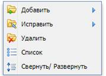
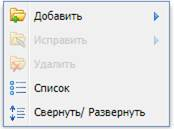
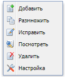

КТМ в графическом интерфейсе пользователя - меню, набор команд в котором зависит от выбранного, или находящегося под курсором в момент вызова объекта, а также состояния рабочей среды и программы, в которой этот объект находится - то, что в совокупности представляет собой контекст, для этого меню. Вызов КТМ осуществляется по нажатию ПКМ.
Доступные для применения («активные») пункты КТМ подсвечены, тогда как недоступные («неактивные») отображаются бледно. В разных разделах Системы КТМ имеет разный набор возможных пунктов (действий, операций), зависящий от функционала соответствующего раздела и персональных настроек доступа конкретного пользователя (Рисунок 8).

Рисунок 8 – Варианты контекстного меню Системы
Для удобства пользователя пункты КТМ дублируются на панели задач во всех разделах Системы.
«Добавить»
Действие «Добавить» применяется для добавления новой (пустой) записи в раздел Системы (заголовка документа, спецификации, внешнего файла и др.).
Вызывается из КТМ или путем нажатия на соответствующую иконку на панели задач раздела.
«Размножить»
Действие «Размножить» позволяет добавить дубликат выбранной записи раздел Системы. Добавленный дубликат содержит копию данных исходной записи, за исключением порядкового номера и даты и времени создания.
Вызывается из КТМ или путем нажатия на соответствующую иконку на панели задач раздела.
«Исправить»
Действие «Исправить» позволяет внести изменения в выбранную запись. Возможность выполнения действия зависит от статуса выбранной записи (если документ утвержден внести в него правки нельзя), а также от персональных прав доступа пользователя.
Вызывается из КТМ или путем нажатия на соответствующую иконку на панели задач раздела.
«Посмотреть»
Действие «Посмотреть» позволяет открыть выбранную запись для просмотра. Внести правки при выполнении данного действия нельзя. Действие доступно вне зависимости от статуса выбранной записи.
Вызывается из КТМ или путем нажатия на соответствующую иконку на панели задач раздела.
«Удалить»
Действие «Удалить» позволяет удалить выбранную запись (выбранные записи) из Системы. При удалении записи потребуется подтверждение удаления.
Вызывается из КТМ или путем нажатия на соответствующую иконку на панели задач раздела.